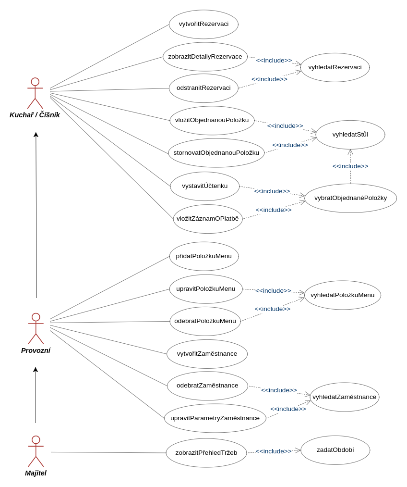

Restaurace
- Autoři
- Juraj Korček
xkorce01@stud.fit.vutbr.cz - databázový subsystém, uživatelské rozhraní
- Jan Kubica
xkubic39@stud.fit.vutbr.cz - uživatelské rozhraní, testování
- URL aplikace
- http://www.trojanhorsepub.xyz
Uživatelé systému pro testování
| Login | Heslo | Role |
|---|
| xkubic01 | user1 | Majitel |
| xkorce01 | user2 | Provozní |
| xnovak01 | user3 | Kuchař |
| xsvobo01 | user4 | Číšník |
Implementace
Informační systém byl implementován klasickým způsobem za použítí MySQL databáze a skiptovacího jazyka PHP. K zjednodušení implementace byla využita knihovna Bootstrap v3 přičemž nebyl použit žádný jiný PHP framework. Oproti původnímu databázovému modelu, který vycházel z předmětu IDS, bylo potřeba zohlednit, že s nově vytvořeným systémem budou pracovat i běžní uživatelé. Pro zachování konzistence a větší bezpečnost jsou tak například při odstranění již neplatné hodnoty v databázi (například již neservírované položky menu) konkrétní řádky databáze zneviditelněny atributem "hide_".
V rámci systému se objevují čtyři typy uživatelů - Majitel, Provozní, Kuchař a Číšník.
- Majitel má ze všech uživatelů nejvyšší pravomoce a jako jedinému je mu umožněn přehled tržeb za zvolené období.
- Provozní má oproti kuchaři a číšníkovi možnost editovat údaje o zaměstnancích, vytvářet/odebírat jednotlvé stoly nebo přidávat ingredience a položky menu.
- Kuchaři a číšníkovi je umožněno vytvářet a nahlížet na objednávky a rezervace.
- Rezervace je možno vytvářet na více stolů současně, příp. tedy i celé restaurace.
- V rámci jednoho stolu lze běžně objednané položky rozdělit mezi zákazníky a vytvořit tak několik účtenek.
- U rolí kuchaře a číšníka je přirozeně předpokládána průběžná práce s informačním systémem, zatímco účty majitele a provozního jsou pro větší bezpečnost při více jak 15-ti minutové nečinnosti automaticky odhlašovány. Po vypršení 15 minut a následném pokusu o otevření jiné podstránky nebo uložení formuláře je uživatel odhlášen, přesměrován na přihlašovací stránku a případné vyplněné formuláře nejsou uložené.
- Při přehledu tržeb a rezervací a nezadání datumu a hodiny se implicitne počítá aktuální den. Při přidávání rezervace se zase počíta v položce Datum od s aktuální hodinou a v Datum do s aktuální hodinou inkrementovanou o 2.
Zdrojové soubory
-
Objednávky - objednavky_*.php - soubory umožňující pohled na vytvořené stoly v restauraci s aktuálními objednávkami.
-
Rezervace - rezervace_*.php - soubory zobrazující vytvořené rezervace stolů v zadaném období, u jednotlivých rezervací je možno pak zobrazit detaily, smazat rezervaci, přidat rezervaci.
-
Menu - menu_*.php - soubory poskytující přehled o položkách menu a o jednotlivých ingrediencí. Jsou rozděleny na:
-
Ingredience - _ingred_ - část zobrazující všechny ingredience, jejich přidáni, odebrání, modifikace.
-
Položka Menu - _polozka_ - část pro přehled všech položek menu, jejich přidáni, odebrání, modifikace.
-
Zaměstnanec - user_*.php - přehled o všech zaměstnancích registrovaných v systému, jejich přidáni, odebrání, modifikace.
-
Stoly - table_*.php - soubory pro správu stolů v restauraci. Stoly je možno přidávat, odebírat nebo měnit jejich kapacitu.
-
Tržby - trzby.php - modul zobrazující přehled třžeb a utrženou sumu za zvolené období.
-
Header - header.php - navigační panel IS, umožňující přepínání mezi stránkami.
-
Footer - footer.php - soubor se zápatím stránky.
-
Index - index.php - soubor definující přihlašovací stránku do systému.
-
Login Script - login_script.php - soubor zajišťující přihlašování do systému.
-
Permissions - permissions.php - soubor popisující stránku při neoprávněném přístupu do systému.
-
Timeout - timeout.php - soubor pro automatické odhlašování majitele a provozního.
-
Functions - functions.php - soubor definující funkce pro připojení k databázi a informační flash messages.
Instalace
- Požadavky: PHP 7.0, MySQL 5.7 databázový server (vč. phpMyAdmin).
- Pro správnou funkčnost je třeba rozbalit zip archív a nahrát soubory na uložiště na serveru.
- Vzorová databáze systému s definicemi jednotlivých tabulek k nahrání skrze phpMyAdmin je obsažena ze souboru /sql/IIS.sql. Nutností je import těchto dat skrze rozhraní phpMyAdmin.
- Přihlašovací udaje k databázi je třeba upravit v souboru functions.php.
Známé problémy
Z hlediska funkčnosti nebyly zjištěny žádné problémy. Pro přístup do systému je vždy třeba se přihlásit platným uživatelským účtem vytvořeným v databázi IS. Při objednání jídla s sebou a pozdějšímu vyzvednutí zákazníkem jsou jídla objednávána na bar, kde je kapacita stolu vyšší. Informačný systém predpokladá nejnovější verze prohlížečů IE, Firefox a Chrome.
Use-Case Diagram
Pro lepší přehled o možnostech využití systému jednotlivými uživateli je k dizpozici Use-Case diagram.
